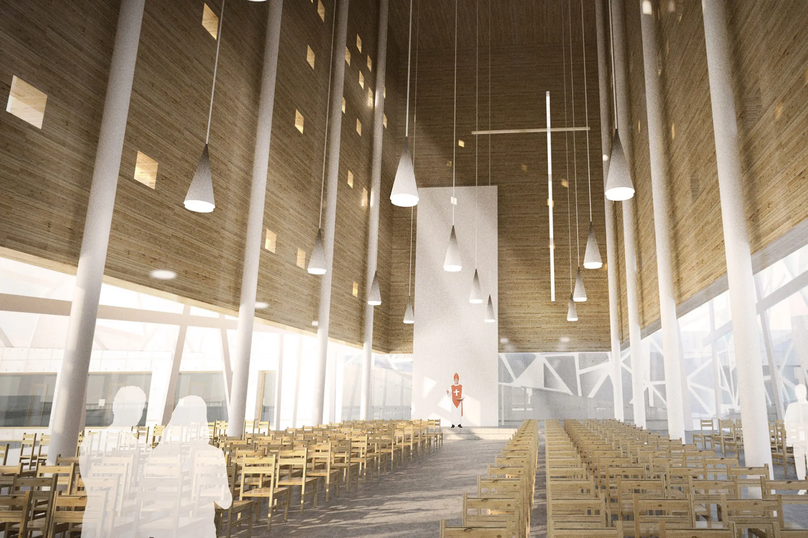
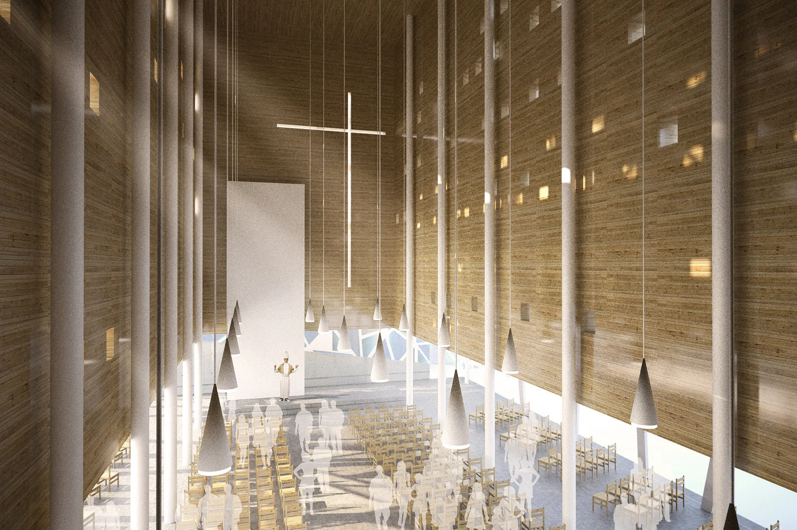
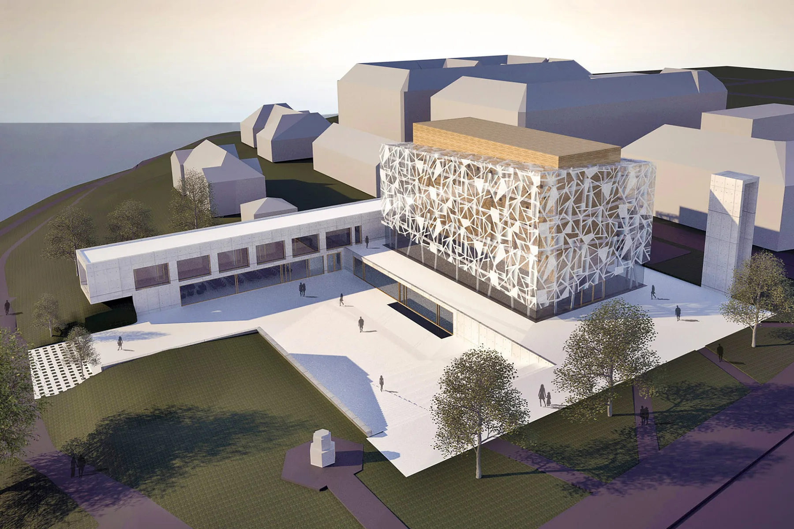
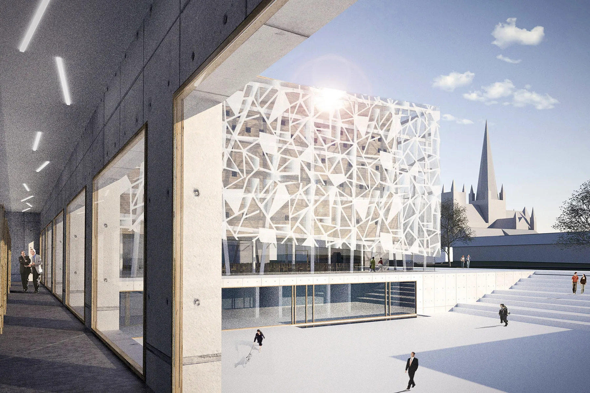
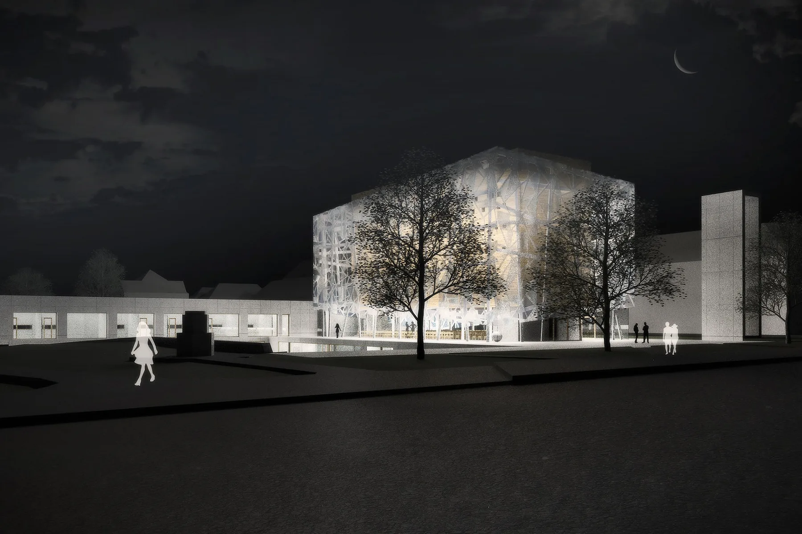
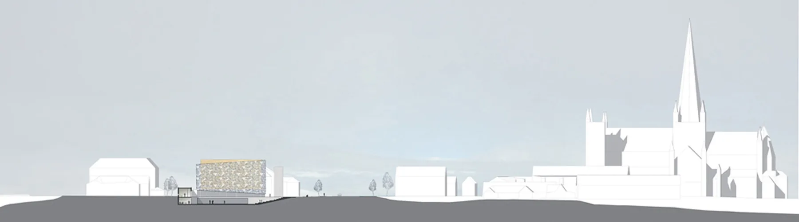
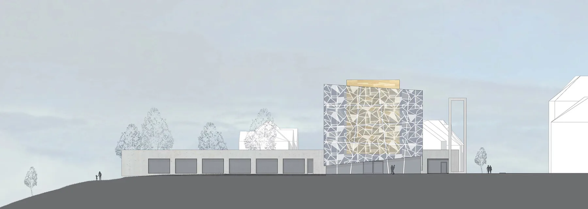

Nye St. Olav Domkirke
56Arkitektkonkurranse | Vårt svar på en allsidig domkirke
Helse · rekreasjon · livssyn · KonkurranserSe bildegalleri

- Byggherre
- Den Katolske kirke Midt-Norge, Trondheim Stift
- Konkurranseår
- 2010
- Medarbeidere
- Gunnar Stenberg, Svein Øvsthus, Kjetil Nordø
Om prosjektet
Et konkurranseforslag for en ny katolsk domkirke i Trondheim. Tegningene undersøker kirkerom, galleri, klostergang og forholdet mellom bygningen og kirkeplassen.
Bilder & tegninger7 bilder



Forstørr

Forstørr

Forstørr

Forstørr

Forstørr

ForstørrKirkerommet. Foto og tegninger: Bergersen Arkitekter AS
La oss begynne med en samtale